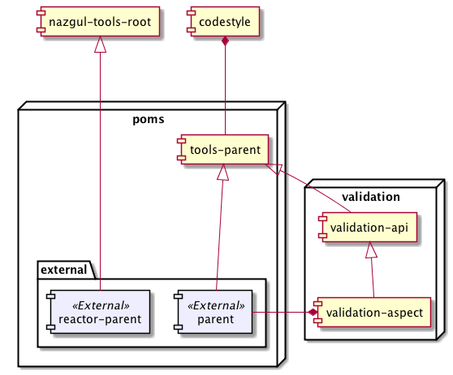

Nazgul Tools reactor and projects
Nazgul Tools is a top-level reactor defining code style, build cycle, parent poms and commonly used (i.e. globally available) aspects. The nazgul-tools reactor projects depend on one another as illustrated in the image below:

The parts of the nazgul tools build reactor are - in build order:
-
nazgul-codestyle. The nazgul-codestyle project contains configurations and implementations for defining and enforcing the Nazgul Software Component (“NSC”) patterns. The maven build rules defined within this project are used throughout all projects within the reactor, and also applied to all projects using the provided parents from this project (i.e. nazgul-parent).
-
nazgul-tools-parent. Including definitions from the codestyle project, this pom is the internal parent for all projecs within the Nazgul Tools reactor. The tools-parent pom configures most of the plugins used for the build cycle definition within Nazgul Framework projects. This parent is, however, internal to the Nazgul Tools reactor and should not be used as parent for any project outside it.
-
nazgul-tools-validation-api/aspect. The validation-aspect defines a globally available aspect implementation for validating the internal state of objects following their construction. As opposed to dynamic container-based validation such as is provided by Spring, JEE or similar containers, the validation-aspect is realized using byte-code weaving - which means it has no special runtime requirements for operation other than the availability of the libraries validation-api and aspectjrt. This implies the Nazgul Tools validation API can be used on any project and in any Java runtime, as long as the nazgul-tools-external-parent is a parent pom of the actual maven project.
-
nazgul-tools-external-parent. This is the pom which should be used as a parent pom for projects external to the Naztul Tools reactor, as it includes all infrastructure required to use all codestyles, rules and globally available aspects from the Nazgul Tools reactor.
-
nazgul-tools-external-reactor-parent. This is a pom which should be used as a parent pom for reactor poms in projects external to the Nazgul Tools reactor. It includes infrastructure required to properly construct site documentation, required for NSC component projects.
Using Nazgul Tools in a subproject
Define a separate parent pom for your subproject, and include the Nazgul Tools external parent as shown below. Substitute com.acme.someproject for your appropriate values, and 5.0.1 for the latest Nazgul Tools release.
<!--
################################################
# Section 1: Project information
################################################
-->
<parent>
<groupId>se.jguru.nazgul.tools.poms.external</groupId>
<artifactId>nazgul-tools-external-parent</artifactId>
<version>5.0.1</version>
<relativePath />
</parent>
<groupId>com.acme.someproject.poms.core-parent</groupId>
<artifactId>acme-someproject-parent</artifactId>
<version>1.0.0-SNAPSHOT</version>
<packaging>pom</packaging>